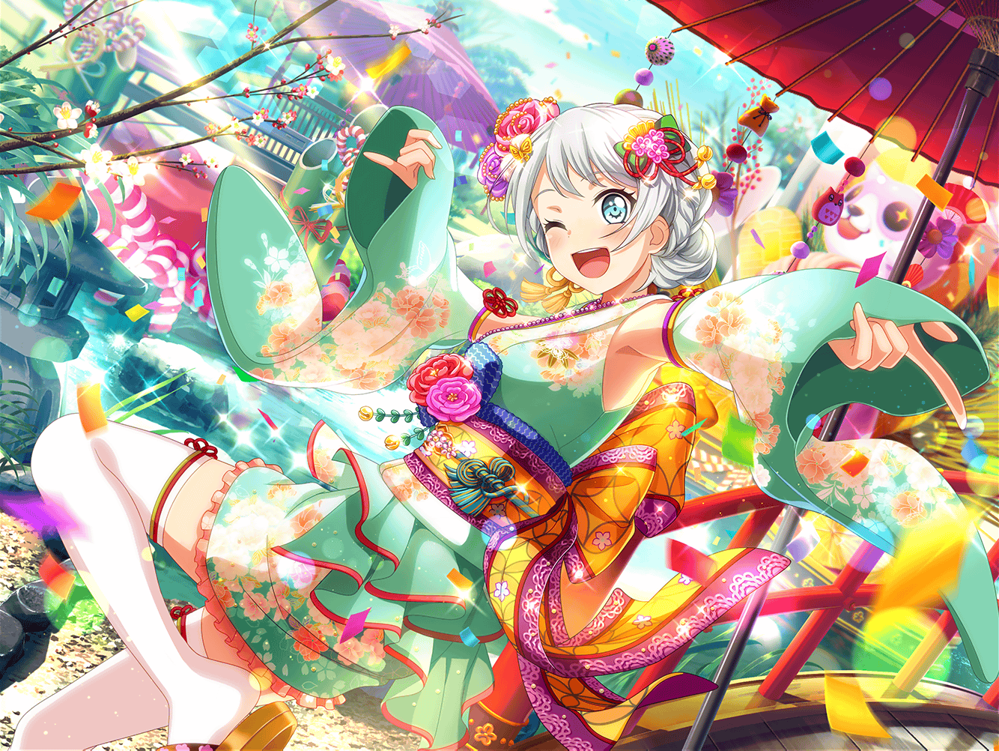

商店街
イヴ
あ、{{userName}}さん！
あけましておめでとうございます！
イヴ
今年もよろしくお願いします！
お互い、いい１年にしましょうね！
イヴ
{{userName}}さんのお正月は、
どんな感じでしたか？
イヴ
私は初詣に行きました！
マヤさんと一緒に、レポーターのお仕事があったんです
イヴ
はい、とっても楽しいお仕事でした！
イヴ
イヴ
巾着袋は親切な方が、拾ってくれましたし
ココロさんが、お正月ならではの、
いろんな体験をさせてくれて、ステキなお正月になりました！
イヴ
凧揚げとか、餅つきもしたんですよ！
難しかったですけど、日本のお正月を
たくさん勉強できました！
イヴ
でも巾着袋には大事なものを入れていたので、
見つかったときは本当に安心しました！
イヴ
中に、年賀状を入れていたんです！
みなさんからもらった大事な宝物です！
イヴ
パスパレのみなさんや、学校のお友達、
それとフィンランドにいる、ハンネからも届いたんです！
イヴ
そうですね、フィンランドでは、
普通クリスマスカードを送るものなんですけど、
ハンネが、日本の風習に合わせてくれたんです
イヴ
花火の絵が描いてありました！
フィンランドの新年らしくって、
ちょっと懐かしくなりました！
イヴ
冬なのに、花火って意外ですか？
フィンランドでは、年越しには、
花火が欠かせないものなんですよ！
イヴ
そうそう、ハンネの年賀状に、
『また日本に行きたい』って書いてあって、
とっても嬉しかったです！
イヴ
それにしても、あの開運グッズがなかったら、
これも見つからなかったかもしれないです……
イヴ
はい！ 破魔矢とかお守りとかいろんなものを
アコさんと、リンコさんが買ってきてくれたんです！
イヴ
私の大凶を吹き飛ばすためだ、って言って
このくらい買ってくれたんですよ！
イヴ
マヤさん、ココロさん、ミサキさんも
一生懸命探してくれて、
みなさんには、本当に感謝してもしきれません！
イヴ
そういえば、日本のお正月には
たくさん縁起のいいものがあるんですね！
調べてみて、ビックリしました！
イヴ
中でも１番驚いたのは、初夢の
『一富士二鷹三なすび』というやつですね！
イヴ
富士山や、タカは
なんとなく縁起のよさそうな感じはしますけど……
イヴ
なすはどうして、縁起のいいものなんでしょう？
全然見当もつきません！
イヴ
なすにはまだ、私の知らない秘密が
あるのかもしれません……
イヴ
もっと日本のことを勉強すれば、
わかるようになるかもしれませんね！
イヴ
ちなみに{{userName}}は、
なすの出てくる夢って、見たことありますか？
イヴ
私もまだ見たことがないので、
とっても気になります！
イヴ
もし見たら、どんな夢だったか
ぜひおしえてくださいね！
イヴ
私、楽しみにしています！